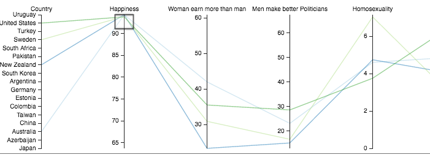

Analytical Trail 2 - Progressive Society and Happiness
By progressive society I mean a countries stance on homosexuality and their sex equality - two factors that were measured during most years. While common knowledge says an increase in these variables should cause a better society, this may or may not be the case. We will find out.

If we look at the bottom two countries it's clear they differ a lot in terms of happiness coming in around 64% and 73%. A bit more than 50% of their population believe it's bad if a women earns more than a man, that men make better politicians and they generally unfavour homosexuality. On the flipside in image 2 it's reversed for every variable. The US was still unfavourable of gay marriage.

This is during the 2000-2004. As with analytical trail 1, there is quiet the lack of data but we can still have a look at the countries who think men make better leaders versus those who don't and how this may correlate to homosexuality.
Except for Germany, the trend is fairly clear here. As time passes and we see countries adapt a more liberal and accepting stance on equality, happiness generally increases.
Finally during 2010-14 we have countries in which we have more properly collected data (for all 30), the trend continues. Except for a few outliers, we sepcifically see that overall the acceptance of homosexuality has increased in a lot of countries, that places people believe in equality and that women and men are equal in terms of leaderships - there's more prevelant happiness.